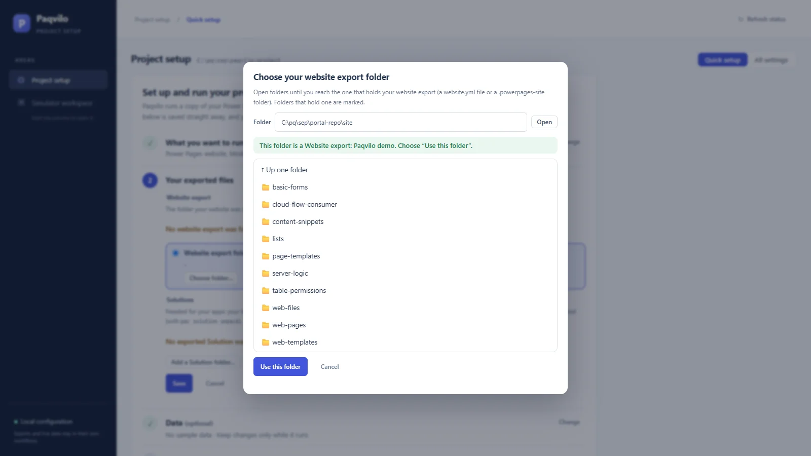
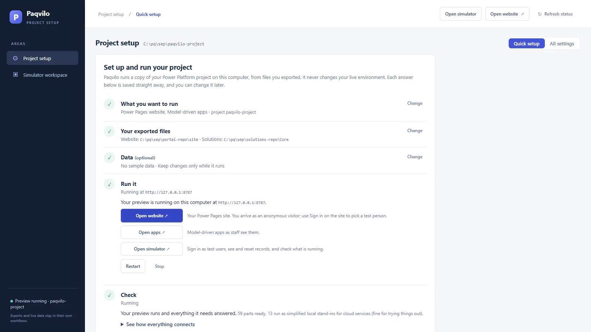
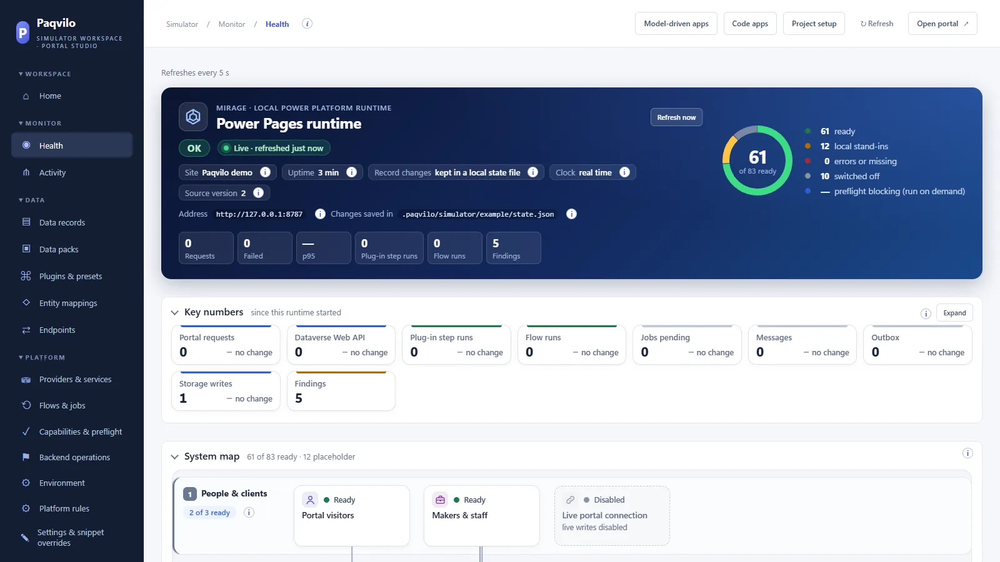
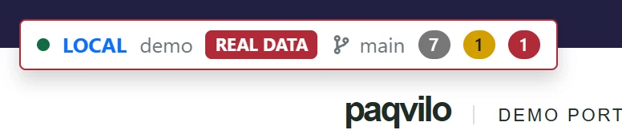
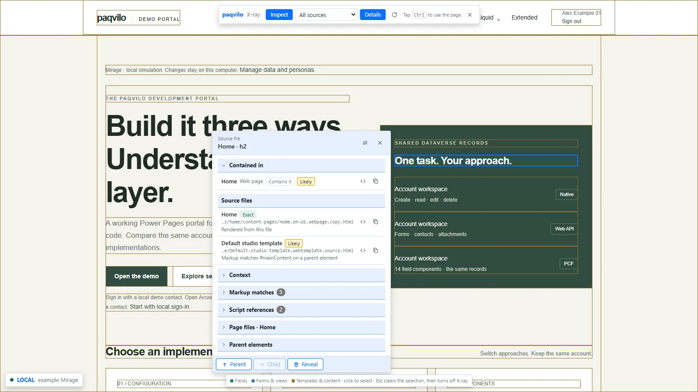
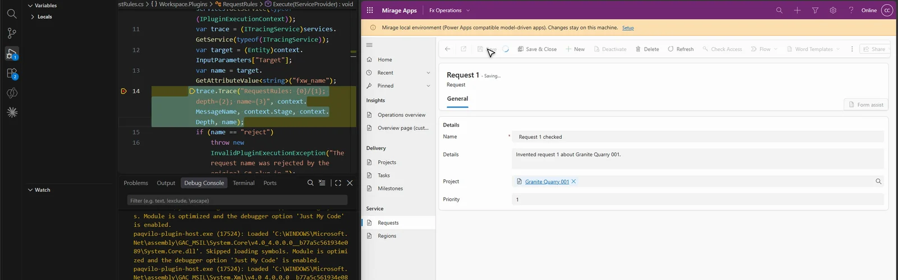
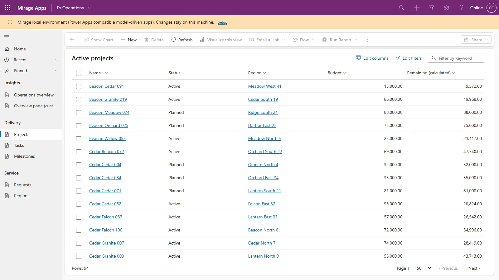
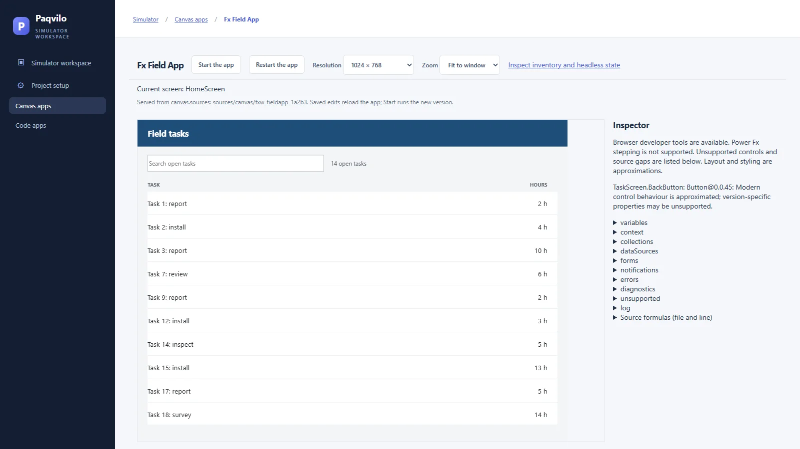
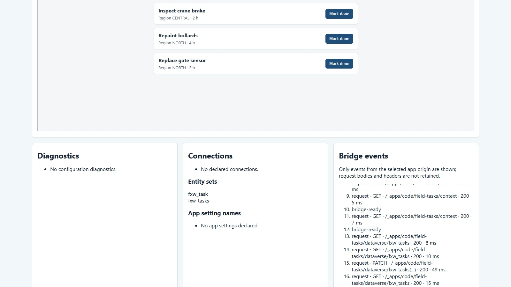
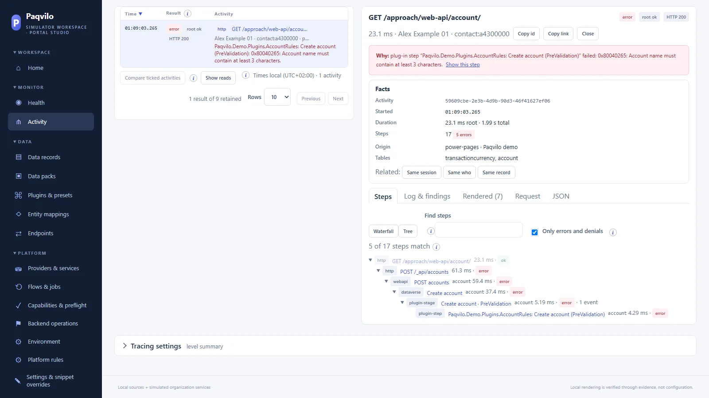

Run, debug and test Power Platform code on your machine
One task per section: what it does, the commands, what you should see. Start with the demo, then jump to the
task you need. What each feature supports and where it stops is on the
capabilities page.
Commands are for Paqvilo 0.9.8. The paqvilo commands work the same in PowerShell, Command Prompt
and bash; a block marked bash needs translating for the other two. Text in
<angle brackets> is yours to replace.
Get started
Install Paqvilo
One npm package supplies every command. You do not clone the repository.
Resultdoctor reports Node, Git, dependencies and the browser as ready. With Chrome
only, pass --browser chrome.
Note In Git Bash, set MSYS_NO_PATHCONV=1 for commands with an option value that
starts with /, such as --page /. If PowerShell blocks npm.ps1,
use Command Prompt.
Run the local demo
A complete invented portal on localhost, with forms, lists, a Web API page, PCF controls, C# plug-in
steps, a cloud flow and a model-driven app. No Power Pages account is needed.
npx --no-install paqvilo mirage demo
Result The sample is copied to paqvilo-example/ and the portal opens in a dedicated
browser on a free port. The terminal prints the portal address and the administration address.
Press Alt+Shift+P to open the developer panel.
On its Tweaks tab, sign in as one of the invented personas.
Edit a file under paqvilo-example/ and save: the page reloads with your change.
Press Ctrl+C in the terminal, or close the browser, to stop.
The demo portal with the developer panel open on Inspect.
Rerunning keeps your source edits and restores the sample data. --scaffold prepares the
folder as a VS Code workspace without starting it.
Demo walkthrough ↗
Set up a Paqvilo project
A Paqvilo project is a folder with the package and a catalogue (paqvilo.config.yml) that
says where your sources are. Put it wherever you like. A folder of its own, beside your repositories, is
the recommended setup: the portal export, the Solutions and the Paqvilo project can each live in a
different repository. Paqvilo only reads those folders; it does not download or move them.
Create the project folder, install Paqvilo and open the setup workspace:
The page opens on Quick setup. Tick what you want to run (a Power Pages website, model-driven
apps, canvas apps, the Dataverse Web API, or several), name the project and press
Create project. This writes paqvilo.config.yml in the project folder.
Under Your exported files, press Choose folder…. Paste the path of your website export
into Folder and press Open, or browse with Up one folder. The dialog confirms
what it sees (This folder is a Website export). Press Use this folder.
Press Add a Solution folder… for each unpacked Solution, wherever it is, then Save.
Under Run it, press Start preview, then Open website for the local site or
Open simulator for /_sim/. Check says what is ready and what is missing, with the step that fixes it.

Pointing the project at a website export that lives in another repository.

Quick setup with the website and the Solution in two other repositories, and the preview running.
Result A catalogue that points at your sources, and a preview on localhost. Each answer is saved
at once and applies at the next preview start.
Note If the project folder already contains exports, for example when you install Paqvilo inside
the portal repository, Quick setup finds them and offers them. All settings (top right) is the
full editor in nine stages: ports, live environments for Lense, test people, sample data, outside
services and Web API access. Setup never deploys, synchronizes or contacts a live portal.
The setup workspace edits paqvilo.config.yml; you can write the same file by hand. Each
path may be absolute, or relative to the catalogue's folder.
Name the website export, at least one environment, and the unpacked Solutions:
sites:
portal:
source: ../portal-repository/site # the folder with website.yml
environments:
local: http://127.0.0.1:8787
mirage:
solutionRoots:
- ../solutions-repository/Core # omit without a Solution export
- C:/work/another-repository/Sales # absolute paths work too
Resultmirage inspect lists the pages, forms and templates of the export and names
the folder it read. mirage preflight lists each Solution it loaded and reports a path it
could not read.
Note To use another checkout of the portal once, for example a second worktree, leave the
catalogue alone and add --repo <folder> (or set PAQVILO_REPO). Since
0.9.8 a command run in a folder without paqvilo.config.yml stops with
CONFIG_NOT_FOUND: run it from the project folder or pass --config.
paqvilo init writes a complete project around the catalogue: npm scripts, VS Code tasks and
launch settings, a data pack, starter tests and guides for your team. Choose it for a project you will
keep and share.
npx paqvilo@0.9 init ./paqvilo-project
cd paqvilo-project
npm run setup
npm run configure
init writes files only. npm run setup installs the dependencies and checks
Node, Git and the browser.
npm run configure opens the setup workspace. Point it at your
sources there, or edit the catalogue: the generated one holds placeholders.
List what is still unfinished:
npm run check:scaffold
Resultcheck:scaffold lists each open TODO(paqvilo-init) marker with
file and line; a new project has about ten. npm run mirage:dev and
npm run dev start Mirage and Lense.
Note In a folder that already has files, add --into-existing. It adds the missing
files and reports the ones it skipped; it never merges an existing package.json or
catalogue, so the npm scripts are not added there.
Paqvilo has two tools. Mirage is the local simulator: it runs your sources on localhost with
local data. Lense is the live preview: it shows local edits on a deployed portal.
You want to
Use
Build or change portal pages without an environment
Mirage renders your exported site on localhost with local Liquid, forms, lists and permissions.
npx --no-install paqvilo mirage dev --config ./paqvilo.config.yml --site portal
Result The portal opens in a dedicated browser. The terminal prints the portal address (port 8787
unless configured) and a separate admin address for /_sim/ and
/_setup/.
Edit a web template, snippet, page, CSS or JavaScript file in the export and save. Every open tab
reloads.
Press Alt+Shift+P for the panel: Inspect lists the templates,
forms and tables behind the page, Mirage the runtime and its diagnostics, Issues what
failed.
Close the browser or press Ctrl+C to stop.
Note A new project starts with empty business tables and an anonymous visitor. Add
data and sign in before judging a list or a form.
To run it in the background, use mirage start, mirage status and
mirage stop with the same options.
Mirage reference ↗
Manage the running simulator in /_sim/
/_sim/ is the administration workspace of a running Mirage: what is ready, what each
request did, the local records, and who the browser is signed in as.
Open it from the admin address the terminal prints, from Open simulator in
setup, or from the Mirage tab of the panel. Typing
/_sim/ after the portal address also works: the browser is redirected.
It opens on Monitor → Health: readiness, request and failure counts, and a map of the simulated
system.
See the simulation level and where changes are saved; export or import the state.

/_sim/ of the demo. The top bar opens the apps, project setup and the portal.
Note/_sim/ manages a running preview;
/_setup/ changes its configuration, which applies at the next start.
Project setup in the top bar switches between them.
For realistic, repeatable cases, use a data pack: a module in your project that supplies rows,
personas and presets. A project from paqvilo init already registers
pack/pack.mjs under mirage.dataPacks in the catalogue. Add your rows there,
and make its matches function return true for your export: until it does,
the pack stays inactive.
Edit rows, apply a preset or reset everything in the Data views of /_sim/ on the
administration address.
Result Lists and forms show the rows. The state file keeps your edits between sessions until you
reset it.
Note A pack module is loaded at start: restart the session after you change it. In the catalogue,
the id of a dataPacks entry must equal the id the module exports.
Lense opens your deployed portal in a dedicated browser and serves your local JavaScript, CSS, images
and literal markup in place of the deployed ones. Nothing is uploaded.
Name the environment in the catalogue. Mark one that holds real data:
Commit the export once, in the repository that holds it (run git init there if it is not
a repository yet). Lense compares your files with this Git baseline to patch markup; a repository
around the Paqvilo project does not supply it:
git add .
git commit -m "Baseline portal export"
Start Lense and sign in on the portal's own sign-in page:
npx --no-install paqvilo lense dev --config ./paqvilo.config.yml --site portal --env dev
Save a CSS file: the stylesheet swaps in place. Save a script: the affected tabs reload.
Alt+Shift+O switches all tabs between Local and Online.
Open the panel's Issues tab. An edit Lense cannot show, such as a Liquid change, is listed
under Needs deployment or a source fix.
Result The live page shows your local files. The panel's Overrides tab lists each one as
differs from deployed or same as deployed.
Note This is the real site. Liquid, Dataverse and server logic run online, and submitting a form
changes real data.
The panel is where you see what Lense did to the page, find the file behind an element and read what
still needs a deployment. It starts as a pill in the corner; click it or press
Alt+Shift+P to open it.

The pill: the mode, the site, the branch, and counters for overrides on this page, source notes and
errors.
Each view below is the panel on a live demo portal with three local edits: a stylesheet, a script and a
page copy. Select a number on the picture, or an item in the list, to see what that part does.
Overrides
Your local files that this page uses, and whether each one differs from what the portal serves. This
is the tab to check after every save.
Where you are. The site and the environment. REAL DATA marks an environment flagged
caution: true in the catalogue.
Local | Online.Local lays your files over the site. Online shows it as
deployed, in every tab of this site (Alt+Shift+O).
Tools, left to right: live reload on save, X-ray, project setup (opens
setup in a new tab), panel size, hide everything
(Alt+Shift+L), collapse
(Alt+Shift+P).
Git baseline. The branch and the commit your files are compared with. It is the local
history of the export, not the deployed version.
Filters.Edited: files you changed since the baseline. Differs from deployed:
files whose content is not what the portal serves.
Local files.all overrides the site with every local file;
changed vs Git only with the ones you changed. Switching reloads the page.
A file. Its kind, name and state: edited, differs from deployed or
same as deployed, and how often the page requested it. Click the row to open the file in
your editor.
Per file: compare it with the deployed version, pause this override to see the online one,
copy the path.
Footer. The shortcuts, and how many files and scripts the local sources hold.
Inspect
What the page is made of, read from your sources: its files, template chain, forms and lists, tables
and access rules. Use it to find the file to edit.
Needs deployment or a source fix. An edit Lense cannot lay over the page, with the file and
the reason. Here a page copy change: this site has the page copy preview switched off, so only a
deployment shows it.
JavaScript errors on the page, with their source and count. This one comes from a platform
script, not from a local file.
Local files only hides issues that do not come from your files.
Copy the message, for a ticket or a colleague.
Clear the list.
Activity
A timed log of what Lense did: saves it picked up, reloads, and switches between Local and Online.
A file with its kind and path. Click the row to open it in your editor.
Go to the page, or copy its address. A file row copies the file path.
Online mode
Press Alt+Shift+O to see the page exactly as the portal serves it,
then again to return. Use it to tell your change apart from what is already deployed.
Online is selected. Every tab of this site switches with it.
The banner stays on the page while the overrides are off, so a screenshot shows which
version it is.
Back to local lays your files over the site again.
The list is empty in this mode: nothing local is applied.
Notemirage dev shows the same panel on localhost. There it has no
Local | Online switch, and adds the Tweaks tab to
sign in as a persona and the Mirage tab for the runtime, its
diagnostics and the links to /_sim/.
X-ray maps what you see to the exported file that produces it. It works in Mirage and in Lense.
Press Alt+Shift+X, or the target button in the panel header.
Click an element. A card beside it lists its Source files and how certain each match is:
Exact, Likely, Conflict, Not found or Outdated.
Open the file from the card. It opens in VS Code at the line; set editor in the catalogue
for another editor.
Tap Ctrl to use the page normally (open a menu or a modal), then tap it again to keep
inspecting.

X-ray on a local page: the selected element and its source.
Result Your editor opens the exported file at the line that produces the element.
Debug portal JavaScript in VS Code
Set a breakpoint in the exported file and hit it from the page.
Open the project folder in VS Code. paqvilo init generated its launch configurations.
Run <Project>: mirage:dev:debug for the local site, or <Project>: dev:debug
for Lense on the live portal.
Set a breakpoint in a JavaScript file of the export and trigger it in the browser.
Result VS Code pauses in your source file, with the call stack and variables of the page.
Without the generated configurations, add --debug-port 9222 to mirage dev or
lense dev and attach any Chromium debugger to that port. After changing the catalogue, run
npm run editor:refresh.
Check a change before you deploy
Offline checks for a script or CI, and one that looks at the live page.
doctor: the catalogue, sources and baseline are usable; includes analysis findings.
audit --strict: every source file is classified, and fails when one is not. Offline.
resources: what Lense would override on one page. Offline.
verify: opens the live page and reports which overrides applied. Add
--signed-in --headed for pages behind sign-in, with the dev session closed.
Result Each command exits non-zero when its check fails, so a script or pipeline can stop on it.
Note Add --json for scripts. A classified source is not proof that the browser
applied it; verify and the panel's Overrides tab show that.
Dataverse and apps
These surfaces run beside a portal, or without one from a project file (--project). On a
portal runtime they are served on a separate apps address: open them with the Model-driven apps,
Canvas apps and Code apps links in /_sim/; scripts read
appsUrl from npx --no-install paqvilo mirage status --json.
Start a local Dataverse Web API
A local organization that OData clients, ServiceClient and MSAL can sign in to, for
integration code and API tests.
Create mirage.project.yml next to an unpacked Solution:
Request a token, then call the API with it (bash; ORIGIN is the address
mirage start printed as Dataverse API:, also
links.dataverseApi in the status):
ResultWhoAmI answers 200 with the token and 401 without. Stop with
mirage stop --project ./mirage.project.yml.
Note For an SDK, the organization URL is that origin, the authority
<origin>/<tenantId> and the scope <origin>/.default. MSAL
needs tls: true and trust of the local CA file, which exists only above the
dry-run level (use simulation); the .NET ServiceClient needs
port: 80. Beside a portal, enable the endpoint with
mirage.dataverse.enabled: true in the catalogue.
The steps registered in your Solution run when a local form, Web API call or app saves a row.
Open /_sim/ on the administration address and go to Backend operations. Each
exported step is listed with its message, table and stage.
Choose how a step runs: the original assembly (Windows), a project
handler, a JSON mock, a placeholder or disabled.
A project handler is a synchronous JavaScript function in the default export of your
data pack (pack/pack.mjs), registered by step id:
const pluginSteps = {
'<step id>': ({ target, reject }) => {
if (Object.hasOwn(target, 'name') && String(target.name ?? '').trim().length < 3)
reject('Account name must contain at least 3 characters.');
},
};
export default {
// id, matches and the other members of the pack stay as they are
pluginSteps,
};
Save a row that breaks the rule.
Result The write is refused with your message and rolled back. The
trace shows the stage and step that refused it.
Note A step whose Solution export contains the assembly runs that assembly by default when no
handler or mock is registered for it. Off Windows such a step fails its write (0x80040224)
until you give it a handler or a mock.
Stop at a breakpoint in your plug-in source while the local pipeline runs it, without the Plug-in
Profiler or an environment.
Prerequisites: Windows x64 with .NET Framework 4.x (part of Windows), the Dataverse SDK assemblies
(the
Microsoft.CrmSdk.CoreAssemblies NuGet package), VS Code with the C# extension, and a
Debug build with <DebugType>portable</DebugType>.
In your data pack's pluginRuntimes descriptor for the step, point at the Debug build:
{
// trust, root, typeName, SDK, context and serviceProfile fields stay as they are
defaultMode: 'clr',
assembly: 'bin/Debug/net462/Example.Plugins.dll',
symbols: ['bin/Debug/net462/Example.Plugins.pdb'],
debug: true,
}
Start mirage dev, set a breakpoint and trigger the operation. The terminal prints the
process id of paqvilo-plugin-host.exe, which waits for a debugger.
Run the launch configuration <Project>: Mirage plug-in: attach .NET Framework and pick
that process.
Result VS Code pauses in your C# source. Inspect InputParameters, images and
SharedVariables; the request stays pending while you are paused.

A C# plug-in step paused in VS Code; the local model-driven form that triggered it is still saving.
Note There is no hot reload. To rebuild: stop Mirage, build, start again and attach to the new
process. The launch configuration comes from paqvilo init; add it to an existing project
with npx --no-install paqvilo init --refresh-editor.
npx --no-install paqvilo mirage dev --project ./mirage.project.yml
Pick an app, or open one directly:
/main.aspx?appname=<UniqueName>&pagetype=entitylist&etn=<table>.
Result Views and forms render from the Solution metadata against local rows. With trusted
extensions on, form scripts, commands and PCF controls run; a client API member that is not supported
throws instead of silently doing nothing.

A model-driven app served from exported Solution metadata.
Run a canvas app from its source, with its Power Fx evaluated on local data.
List the app sources in the project file (an .msapp file or a folder with extracted
Src/*.pa.yaml). Canvas apps inside a Solution root are found automatically.
canvas:
sources: [apps/my-canvas-app]
Start the runtime, open /_sim/ and select a staff user: the app runs as that user.
Open Canvas apps (/_apps/canvas/ on the apps address), choose the app and press
Start the app on its page.
Use the inspector for a control's source file and line, the app state and formula errors. Edit a
source file, then start the app again.

The canvas player with its inspector.
Result The app runs in the player on local rows; a formula error is shown with its source file
and line.
Note In the catalogue the key is mirage.canvas. Without a staff user the player
answers 401 CanvasPrincipalRequired.
npx --no-install paqvilo mirage dev --project ./mirage.project.yml --debug-port 9222
Select a staff user in /_sim/, then pick the app in the workbench.
Result Mirage starts the runtime and the dev server and opens the workbench at
/_apps/code/. Your app's getContext and generated data services answer from
local data, and saved edits apply through HMR.

The workbench below the framed app: diagnostics, connections and the requests the app made.
Note Connector calls answer 501 unless you supply a local simulation. Production builds keep
Microsoft's plug-in and the native SDK path.
Run your built control where it is used, bound to local rows.
Build the control for production (npm run build -- --buildMode production) and include
its Solution, with Controls/<name>/ControlManifest.xml and the bundle, in the
Solution roots.
On a portal page, use the Liquid tag; on a form, keep the control binding from the form designer:
Decide what answers when a page triggers a flow, a server logic endpoint or another backend operation.
Open /_sim/, then Backend operations. Exported flows and server logic are listed.
Pick a mode per operation: run the exported flow in the local interpreter, run the exported server
logic, return a JSON mock, call a provider from your data pack, or disable it.
Trigger it from the page, then read the run under Flows & jobs or in the trace.
Result The page receives the answer of the mode you chose, and the run is listed with its
actions.
Note Dataverse connector actions use local rows. No other cloud connector is called: map a
connection to a local provider under connections, or mock the operation.
Resultshow prints the nested steps with status and duration, and each error as
code: message, for example
PermissionDenied: Table permission denies read on contact.

Monitor → Activity: a save refused by a plug-in step, with the reason and the step tree.
Note Tracing is on at summary. For redacted payloads run
mirage trace settings --level full; set mirage.trace.level: off to disable it.
For a runtime started elsewhere, pass --origin http://127.0.0.1:<port>.
Rules for Power Pages, Dataverse and ALM, model-driven and canvas apps, PCF, code apps, flows and
connectors. Nothing is built, executed or sent anywhere.
Result Each finding has a rule id, severity, file and line, an explanation and a remedy. The
command exits 1 when a finding reaches --fail-on (error by default;
warning, hint or none).
Node tests that talk to a running local runtime, for CI without an environment.
Start the runtime in the background:
npx --no-install paqvilo mirage start --config ./paqvilo.config.yml --site portal.
Connect and assert on what the portal answers:
import assert from 'node:assert/strict';
import test from 'node:test';
import { connectRuntime } from 'paqvilo/mirage/testing';
test('the home page renders for an anonymous visitor', async () => {
const sim = await connectRuntime({ config: './paqvilo.config.yml', site: 'portal' });
const response = await fetch(`${sim.origin}/`);
assert.equal(response.status, 200);
});
Run node --test, then npx --no-install paqvilo mirage stop.
Result The test passes without a browser, an environment or a tenant, so it can run in CI.
Note To test as a persona, load contacts first, then pass the headers of
await sim.signIn(null, { contactId: '<contact id>' }) to fetch. Assert
on status, content and trace steps, never on durations. A passing test describes the local model;
confirm what matters in a real environment.
A project from paqvilo init has an npm test script and sample tests.
Public API ↗
Work with an AI coding agent
Give an agent the same loop a developer has: edit sources, run a local check, look at the page.
Point the agent at the AGENTS.md that paqvilo init generated. It lists the
project's commands and boundaries.
Let it verify offline first: analyze, lense audit --all --strict,
mirage inspect and your tests, all with --json.
For a look at the running page, it can use the bounded browser API of a dev session:
Result Each command prints one JSON document: the pages of the session, a sanitized snapshot of
elements, or the path of the PNG it wrote.
Note The API is confined to the session's origin and has no script evaluation or form actions.
Discovery files under .paqvilo/ contain access tokens: never print or commit them. Running
Lense for an agent does not authorize it to change live data.
Run from the folder with paqvilo.config.yml, or pass --config.
unsupported_option, or "may be given only once"
0.9.8 rejects options it used to ignore. Check the command's --help and fix the
script.
403 AdminOriginRequired or AppsOriginRequired
A script must call /_sim/ on the administration address printed at start and
/_apps/ on appsUrl, not on the portal address. A browser is redirected
by itself.
Mirage does not start
Run mirage preflight with the same options; read
.paqvilo/mirage/logs/startup-*.log.